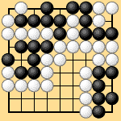
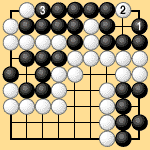
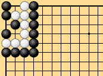
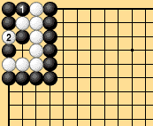
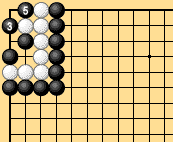

| 2.3.9 Special Positions |
|---|
| Dia. 2-23-1 is the famous Fujimura problem. This is in principle the same as a bent four in the corner. After connecting on the upper edge, Black can eliminate all ko threats, then capture White as in Dia. 2-23-2. In some cases, however, it will not be possible to eliminate all ko threats, so White cannot be considered unconditionally dead. How should these stones be removed? This is an important rules question. |
|  |  |
| Dia. 2-23-1 | Dia. 2-23-2 |
|---|
| Dia. 2-24-1 is another very interesting problem. Black is of course free to make the position a seki, but it is also possible for him to eliminate all White's ko threats, then play to capture White as in Dias. 2-24-2 and 2-24-3. But in the meantime White may have eliminated all Black's ko threats. Since the outcome of this position depends on whether both sides' ko threats can be eliminated, it is similar to a thousand-year ko. |
|  |  |
| Dia. 2-24-1 | Dia. 2-24-2 |
|---|---|
|  | |
|
| Various other odd positions have been devised, but we have seen the majority of them. Although many problem patterns have already been discovered, still more unusual positions may appear in the future. For that reason, an important guideline in formulating the rules is that it is dangerous to make exceptions, or to make complicated rules. |